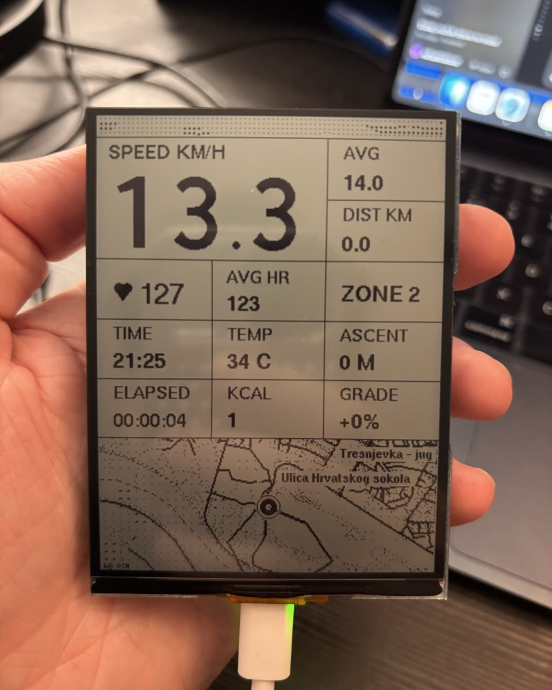
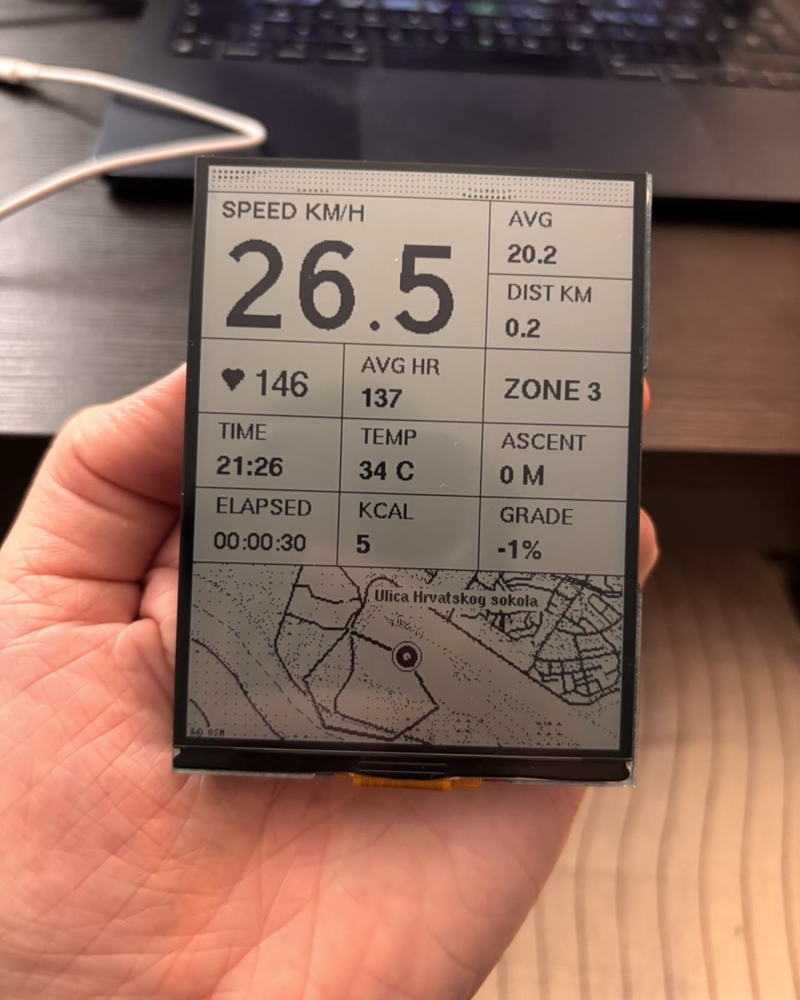
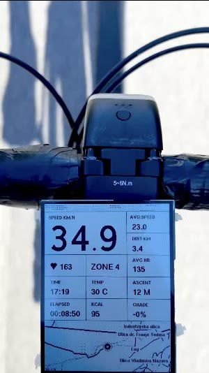
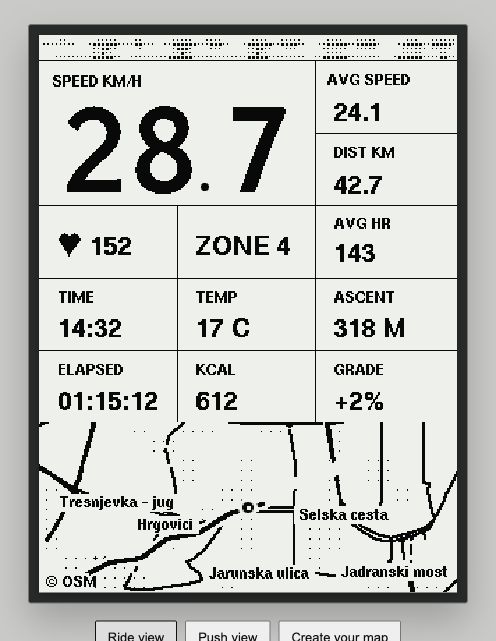
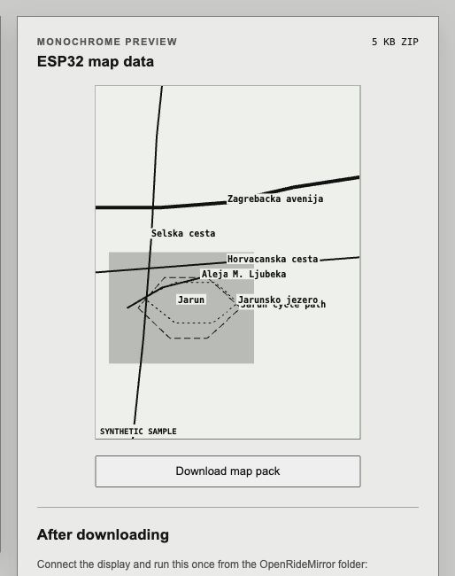

01 / SOURCE
Garmin watch
Records the activity and provides GPS, speed, distance, heart rate, zones, elevation, calories and ride time.
DIY GARMIN COMPANION
OpenRideMirror is not a standalone bike computer. A Garmin watch records the activity and sends live ride data directly to an ESP32 display over Bluetooth Low Energy.
INTERFACE DEMO
Browser recreation with sample data
FROM SCREEN TO BIKE
The same interface runs on the reflective LCD during a real ride. The browser demo recreates it for development, while the map builder turns a selected area into compact data for the ESP32.





Road-test frame from the original @miha.experiments Reel.
LIVE DATA FLOW
The watch remains the sensor and recording hub. The ESP32 is a purpose-built second screen.
01 / SOURCE
Records the activity and provides GPS, speed, distance, heart rate, zones, elevation, calories and ride time.
02 / DISPLAY
Validates fresh telemetry, draws the custom interface and map, reads ambient temperature and stores a short local ride history.
FROM THE WATCH
ON THE DISPLAY
OFFLINE MAP FLOW
A small riding area is prepared once, simplified for the monochrome screen and stored in the ESP32’s flash.
The included web tool generates the firmware-ready map files in your browser.
Open map builderCOMMON QUESTIONS
Answers to the questions that came up most often after the first prototype video.
No. The current device has no GPS receiver and does not record the workout itself. It is a companion display: the Garmin watch records the activity, supplies the live GPS and sensor data, and remains the source of truth.
Not while riding. The Garmin watch connects directly to the ESP32 over Bluetooth Low Energy. The phone is not in the data path, and the map is stored locally. Internet is used only beforehand when generating a new OpenStreetMap extract.
A selected OpenStreetMap area is preprocessed into simplified roads, street labels and a coarse greenery mask. That compact vector data is compiled into ESP32 flash. Garmin sends the current coordinates and heading; the ESP32 renders the surrounding map and the ridden track locally. It does not stream online map tiles.
Almost. Garmin supplies the activity type and state, GPS, speed, distance, heart rate and zone, average statistics, elevation, ascent, calories and time. Ambient temperature comes from the SHTC3 sensor on the Waveshare board. The ESP32 also calculates display states and draws the interface.
No. A custom Connect IQ data field reads the activity values Garmin makes available and sends compact ORM packets. The ESP32 runs its own firmware and renders its own UI. It does not mirror the watch screen or execute arbitrary Garmin apps.
The current application-level data flow is one way: Garmin → display. Garmin acts as the BLE central and writes fresh telemetry to the ESP32’s GATT service. The ESP32 does not upload workouts to Garmin or Strava. Turning it into a sensor or workout recorder would be a separate feature and hardware project.
There is no hardcoded Bluetooth MAC address. The ESP32 advertises the name ORM and a project-specific service UUID; the Garmin field scans for that identity and connects. A replacement compatible board can therefore work without entering its address manually.
The BLE protocol and application logic are portable, but the included firmware targets the exact Waveshare ESP32-S3-RLCD-4.2. Another board needs a display driver, pin definition and layout adapter. So an OLED or M5Core version is possible, but it is a port rather than a plug-and-play build.
No. It is a 4.2-inch monochrome reflective LCD (RLCD) using an ST7305 controller. Like e-paper it is easy to read in daylight, but it refreshes quickly enough for live data and animation. A MIP version has not been tested.
Technically yes, but that would be a different architecture. It would need its own GPS, route navigation, activity storage and sensor integration. OpenRideMirror intentionally reuses the Garmin already on the rider’s wrist instead of duplicating that hardware.
No. The development board and temporary mount are not weatherproof. A proper 3D-printed enclosure, sealing and bike mounting system are the next hardware steps.
The prototype generally feels live, with roughly one to two seconds of observed delay. It is designed to discard stale telemetry rather than build a queue, but latency has not yet been formally benchmarked and depends partly on Garmin’s data-field scheduling.